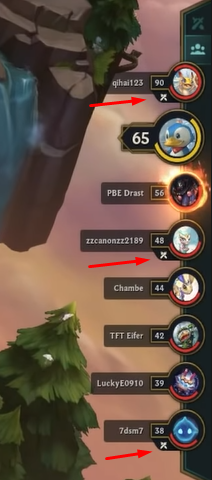
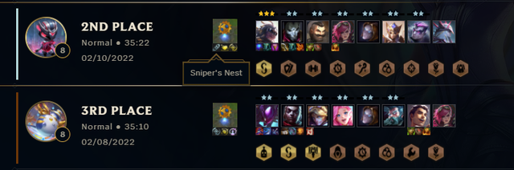
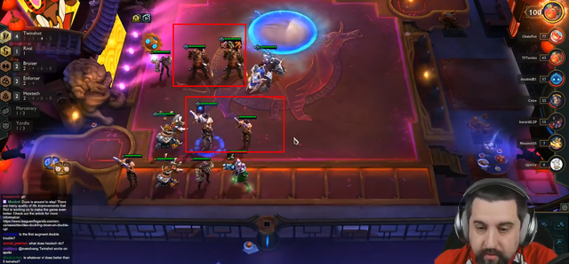

Top 3 thay đổi mang tính bước ngoặt về mặt hệ thống của Đấu Trường Chân Lý mùa 6.5
Những thay đổi dưới đây sẽ giúp game thủ Đấu Trường Chân Lý leo rank một cách hiệu quả hơn khá nhiều trong mùa 6.5.Tính năng dự đoán đối thủ kế tiếp
Trong Đấu Trường Chân Lý thì việc biết được đối thủ tiếp theo của mình là ai là điều vô cùng quan trọng, đặc biệt là ở giai đoạn cuối trận. Điều này cho phép game thủ tính toán ra cách đặt vị trí chủ lực, sắp xếp đội hình sao cho hợp lý, tránh việc bị khắc chế bởi đối thủ và có thể giành chiến thắng. Thậm chí đây còn trở thành một kỹ năng vô cùng quan trọng đối với các game thủ rank cao khi chỉ một pha xử lý sai lầm thôi cũng đủ khiến bạn bị loại sớm.
Và tại mùa 6.5 sắp tới, Riot Games sẽ thêm tính năng dự đoán đối thủ kế tiếp để hỗ trợ game thủ tốt hơn. Cụ thể thì sau mỗi round đấu, sẽ có một số lượng biểu tượng hình 2 thanh kiếm bắt chéo nhau xuất hiện ở cạnh biểu tượng của đối thủ để thể hiện đó có thể là người tiếp theo bạn sẽ gặp ở round tới. Đương nhiên là Riot Games sẽ không chỉ cho bạn chính xác đối thủ tiếp theo nhưng việc thu hẹp phạm vi như vậy cũng giúp game thủ tiết kiệm khá nhiều khi thời gian "soi bài" đối phương.
Lịch sử đấu hiện cả lõi công nghệNgay khi xuất hiện ở mùa 6 thì lõi công nghệ đã trở thành tính năng quá thành công và được cộng đồng ủng hộ hết mình. Hơn nữa, nó cũng chứng minh được sự quan trọng của mình khi có thể định hướng cách xây dựng đội hình vô cùng tốt cho game thủ. Hơn nữa, việc lựa chọn lõi công nghệ như thế nào cũng là một kỹ năng cần phải được rèn luyện khi nó đã và đang trở nên ngày một quan trọng đối với game thủ Đấu Trường Chân Lý
Hiểu được điều này, Riot Games đã thêm tính năng hiển thị lõi công nghệ mà game thủ sử dụng trong trận vào lịch sử đấu. Điều này giúp cho người chơi có thể phân tích và tìm ra lỗi của bản thân khi lựa chọn lõi công nghệ không hợp lý hoặc tìm ra một "wombo combo" nâng cấp nào đó bá đạo để áp dụng cho các trận sau. Với việc Riot xác nhận rằng họ sẽ giữ tính năng nâng cấp hextech này ở mùa 7 thì việc lịch sử đấu hiện cả lõi công nghệ là điều vô cùng cần thiết.
Lõi mới cùng cách xây dựng đội hình mớiỞ mùa 6 thì chúng ta hẳn là đã quen thuộc với lõi Lối Đi Riêng khi đem lại cho người chơi cách xây dựng đội hình cực kỳ phá cách là không kích hoạt tộc hệ. Và tại mùa 6.5 sắp tới, Riot sẽ tiếp tục tung ra một lõi có chức năng tương tự có tên là Double Trouble. Về cơ bản thì khi sử dụng 2 tướng giống nhau trên sàn đấu, chúng sẽ nhận được thêm hàng loạt chỉ số tấn công, phòng ngự. Kể cả khi bạn nâng unit đó lên 3 sao thì cũng kích hoạt được lõi này nhờ nhận thêm 1 tướng 2 sao y hệt.
Với điều kiện kích hoạt "dị" như vậy thì lõi Double Trouble hứa hẹn sẽ mang tới một cách xây dựng đội hình vô cùng khác biệt khi sử dụng 1 chủ lực nhưng ở 2 vai trò khác nhau chẳng hạn. Ngoài ra thì lõi này còn giúp cho các đội hình reroll trở nên cực kỳ bá đạo, kể cả trong thời gian reroll khi tướng dù chưa được nâng lên 3 sao vẫn sở hữu sức mạnh lớn.